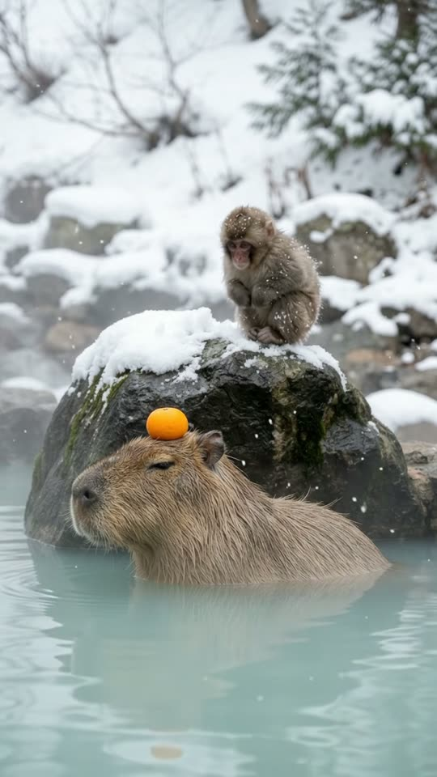
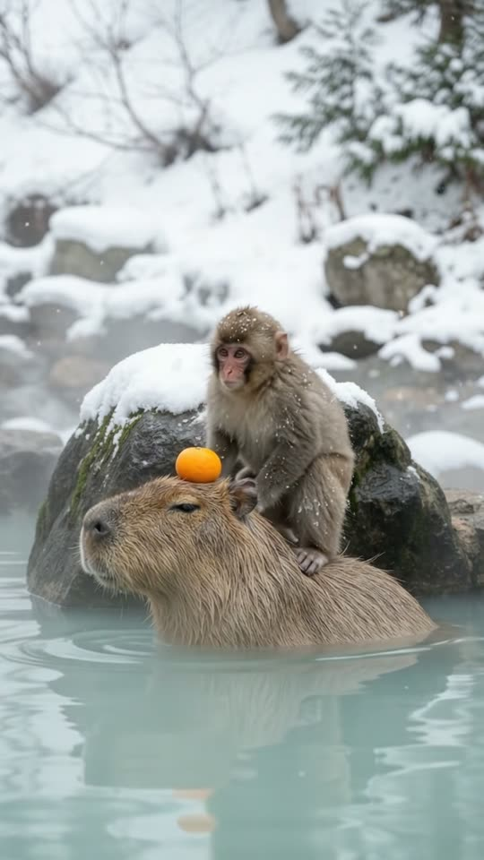
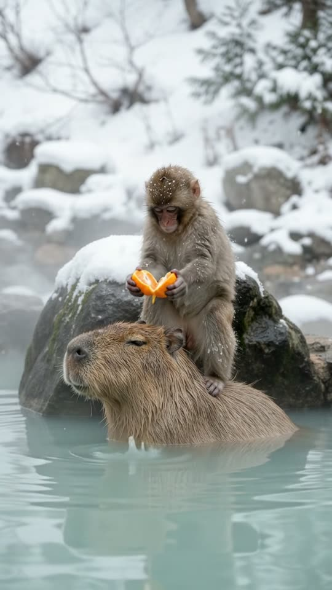
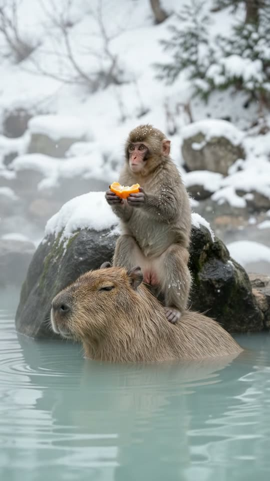

Free prompt pack
He was freezing.She had a hot spring.
A baby snow monkey shivers on a snowy rock above a hot spring. The capybara below, a mandarin balanced on her head, lets him climb onto her back. Warm at last, he takes the mandarin, breaks it in half… and eats both halves. She doesn't even open her eyes. One still image and one prompt, in one take.
Both prompts, in the order I ran them. Peel the mandarin strip by strip to reveal each prompt, then pull it in half. Tap the water to make ripples.
The first frame
The mandarin is already on her head. This image is frame one: a capybara half-submerged in a steaming hot spring in the snow, a mandarin balanced on her head, and a baby snow monkey shivering on the boulder right behind her shoulders.
Watch out
Put every prop where the action needs it. With the mandarin already on her head and the monkey right above her shoulders, each move in the take is one short step.

The prompt 139 words
Real wildlife photo taken with a long lens at an outdoor hot spring in the snowy mountains of Japan, soft overcast winter light, light snow falling. A capybara lies half-submerged in the steaming water, side-on, facing left, eyes half-closed, a bright orange mandarin balanced on top of its head; its coarse reddish-brown fur is wet, the water up to its shoulders. Right behind its shoulders rises a dark wet boulder with a cap of fresh snow, its top a little higher than the capybara's back. On top of the boulder sits a tiny baby snow monkey, hunched and shivering, arms wrapped around itself, thick grey-brown fur dusted with snowflakes, pink face, looking down at the capybara. Thin wisps of steam drift low over the milky turquoise water. Snowy rocks and bare trees softly blurred behind. Natural colour, sharp detail.
Climb, take, break, keep
Ten seconds, locked off from the water. Add the image as the reference, set 10 s, 9:16, 720p and audio on, and paste the prompt whole. First try, no second version.
- 0–1.5 sshivering
- 1.5–3.5 sclimbs on
- 3.5–5 stakes the mandarin
- 5–10 sbreaks it, keeps it
Watch out
The prompt says he gives her half. He didn't: he held it out, then ate both halves. I kept it, because the take where he doesn't share is funnier. Judge what you got before you fix it.
Fragments



The prompt 1208 words
FORMAT Real video filmed with a long lens at a hot spring in the snow, seen as the finished exported video file: the full picture edge to edge, nothing on top of it. Whatever records the picture is never in frame. One continuous take in real time, no cuts. Vertical frame. The video runs at 24 fps. No frame is repeated. Real time, 1x speed, never slow motion. SCENE A tiny baby snow monkey sits shivering on a snowy boulder. Right below it, a capybara soaks in the steaming hot spring with a mandarin balanced on its head. The capybara looks up at the monkey and clicks softly; the monkey climbs down onto the capybara's shoulders and sits in the warm water. Then it takes the mandarin off the capybara's head, breaks it in half and gives one half to the capybara. The monkey is already on the boulder in the first frame. The take ends with both of them chewing mandarin, the monkey sitting on the capybara's shoulders. REFERENCE IMAGE Use it for the monkey, the capybara, the mandarin, the boulder, the water, the steam and the light, and for where each of them is: the capybara side-on in the water with its head on frame-left and the mandarin on top of its head, the boulder right behind its shoulders, the monkey on top of the boulder, exactly as in the image. Everything matches it exactly, zero drift, no smoothing. The movement is described below. THE MONKEY One real baby Japanese macaque, about 25 cm tall: thick grey-brown fur dusted with snow, a pink face, pink hands and feet, small round ears, dark eyes, a short stubby tail. It moves like a real baby monkey: careful, clinging, with quick small hand movements; at the start it shivers in small fast tremors. THE CAPYBARA One real capybara, about 1.2 m long: coarse wet reddish-brown fur, a big blunt square head, small round ears, eyes half-closed, nostrils on top of its snout. It lies in the same spot the whole take and its body never moves through the water; only its head, ears, eyes and mouth move. It moves like a real capybara: slow, calm, unbothered. THE MANDARIN One small bright-orange mandarin, about 6 cm across, with its peel on. Later it is broken into exactly two halves. LOCATION MAP We are 3 m away, just above the water, looking at them side-on. The capybara lies across the frame in the water, its head on frame-left, the water up to its shoulders. The boulder rises directly behind the capybara's shoulders, its snowy top a little higher than the capybara's back, and the monkey sits on top of it, right above the capybara's shoulders. The steaming water fills the bottom of the frame. Snowy rocks and bare trees blurred behind. FIRST FRAME The boulder at x 25-80%, y 36-62%, its snow cap at y 36-42%; the monkey hunched on top of it at x 36-58%, y 20-40%; the capybara's head at x 10-40%, y 44-62%, the mandarin on top of its head at x 20-31%, y 38-45%; its back at x 38-92%, y 46-62%; the water line at y 60%; the water from y 58% to the bottom edge, with thin wisps of steam low over it; snowy rocks and trees blurred behind at y 0-36%. Instant read: a shivering baby monkey in the snow, right above a warm capybara with a mandarin on its head. No delayed reveal. CAMERA Locked off: a still frame with only the faintest natural movement of a long lens. It never pans, never tilts, never zooms, never cuts, never moves closer. The boulder stays at x 25-80% and the capybara's head stays at x 10-40% in every frame, from the first to the last. The frame never follows the monkey. ACTION TIMING 0–1.5 s — The monkey shivers on the boulder, arms around itself, snowflakes settling on its fur, looking down at the capybara. The capybara lifts its chin, turns its head up toward the monkey, gives two soft clicks and lowers its head again. 1.5–3.5 s — The monkey climbs down from the boulder onto the capybara's shoulders, just behind its head, one hand and one foot at a time, and sits down there, its legs and belly in the warm water. The capybara sinks 2 cm under the weight and stays still. Steam rises off the monkey's wet fur and its shivering stops. 3.5–5.0 s — The monkey reaches forward over the capybara's head and lifts the mandarin off it with both hands. The capybara opens its eyes and rolls them up toward the monkey. 5.0–7.0 s — The monkey digs both thumbs into the top of the mandarin and pulls it apart into two halves; a few drops of juice fall into the water. It holds one half down in front of the capybara's mouth. 7.0–10 s — The capybara takes the half with its lips and chews slowly, its eyes closing again; the monkey eats the other half, sitting on the capybara's shoulders. Hold to the last frame. PHYSICS AND SCALE Real size: the monkey is about 25 cm tall and weighs about 1 kg, the capybara about 1.2 m long and 50 kg, the mandarin 6 cm across. The monkey climbs down with its hands and feet on the stone and then on the capybara's fur: at every moment a hand or a foot touches the boulder or the capybara; it never jumps, never swims, never floats. The mandarin is always on the capybara's head or in the monkey's hands; it never floats on the water. Small ripples spread around the monkey's legs when it sits. Snowflakes melt where they touch the water. One monkey, one capybara, one mandarin, then exactly two halves. Nothing morphs. NO FULL-FRAME EVENTS The steam stays in thin, low wisps over the water, below the capybara's back; it never thickens, never rises in front of the animals, never fills the frame. The monkey, the capybara and the mandarin stay visible in every frame. LIGHTING Soft, even overcast winter daylight from above, gentle shadows; the wet fur glistens; the orange mandarin is the brightest colour in the frame. AUDIO No music, no score, no narration, no subtitles. Hot-spring sounds: water trickling and lapping, the soft hush of falling snow, the baby monkey's small high coos and chattering teeth at the start, the capybara's soft clicking purr, the wet tear of the mandarin peel, drops of juice into the water, slow chewing. No words. LOOK Real wildlife documentary footage shot on a long lens, seen as the finished exported file: crisp wet fur detail, natural colour, no film grain, no lens flare, no slow motion, never CGI, never a cartoon. No camera app interface: no shutter button, no gallery thumbnail, no record button, no icons, no timer, no recording dot, no frame lines. POSITIVE LOCKS One baby monkey, one capybara, one mandarin, one boulder. The capybara never swims away. No other monkeys, no other animals, no people. No captions, no subtitles, no on-screen text, no watermark, no logos, nothing on top of the picture. ONE MONKEY. ONE CAPYBARA. ONE MANDARIN, THEN TWO HALVES. THE STEAM STAYS LOW. NO CUTS. NO ZOOM. NO SLOW MOTION. NO MUSIC.
Rule 01
Two animals that never meet
A South American capybara and a Japanese snow monkey in the same hot spring. The pairing is the hook before anything happens.
Rule 02
Count the props
One mandarin, then exactly two halves. Write the count, or it doubles or vanishes halfway through.
Rule 03
Keep the better mistake
I wrote a share and the model gave me a thief. Judge the take, not the prompt.
That's the whole build
Now go share.Or don't.
If yours works, send it over. I read every DM and the good ones end up on the account.
@martiiifons